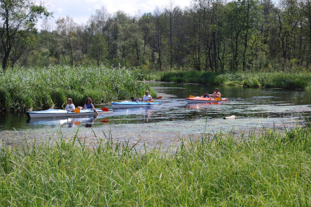
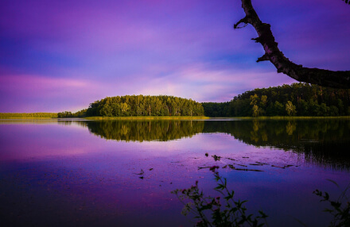
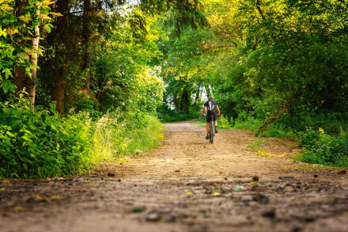
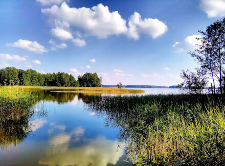
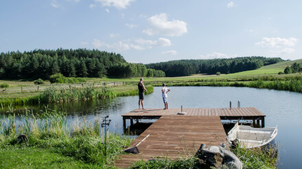
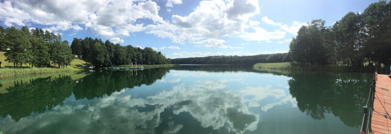
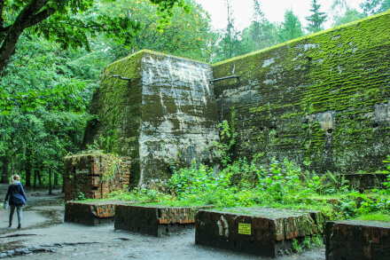
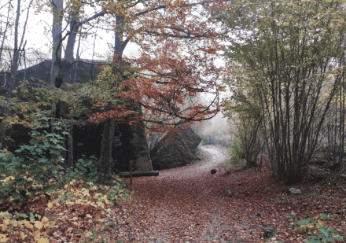
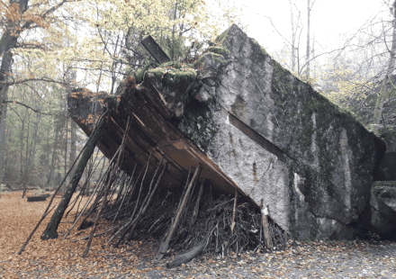

Activites
Looking for unforgettable outdoor holiday ideas? Poland’s Masuria Lakeland is an area of impressive natural beauty with more than 2,000 lakes, dense forests, organic farms and charming resort towns. Little known outside of Poland, Lakeland is well worth exploring. Masuria is one of the best places in Poland to get out and experience the great outdoors. From kayaking along the picturesque Krutynia River and cycling through the area’s thick forests, to sailing and fishing on the country’s biggest lakes, there are plenty of activities to choose from.
Marta Podeszwa - 8 March 2017
Source



Masurian lakes & towns to visit
Measuring over 113 sq km, Śniardwy is Poland’s biggest lake and Pole’s favourite sailing spot. You can take a boat out by yourself or rent a skipper to enjoy a day out on the water (or simply relax on one of the wooden decks). Other lakes worth recommending are the Luknajo Lake (which is a UNESCO Biosphere Reserve), Niegocin and Mamry. Gizycko, Mikolajki and Wegorzewo are the prime towns to visit, get some food and organise your tours and boat/kayak rentals.
Marta Podeszwa - 8 March 2017
Source



Wolf’s Lair
Masuria also houses Hitler’s former Second World War military headquarters, Wolfschanze (Wolf’s Lair), hidden in the forests close to Kętrzyn village. It’s here that Hitler spent more than 800 days and survived an assassination attempt in 1944. The top-secret, high-security site was in the Masurian woods about eight kilometres (five miles) east of the small East Prussian town of Rastenburg, in present-day Poland. Three security zones surrounded the central complex where the Führer's bunker was located. These were guarded by personnel from the SS-Begleitkommando des Führers, Reichssicherheitsdienst and the Wehrmacht's armoured Führerbegleitbrigade. Despite the security, the most notable assassination attempt against Hitler was made at Wolf's Lair on 20 July 1944.
Marta Podeszwa - 8 March 2017
Source


